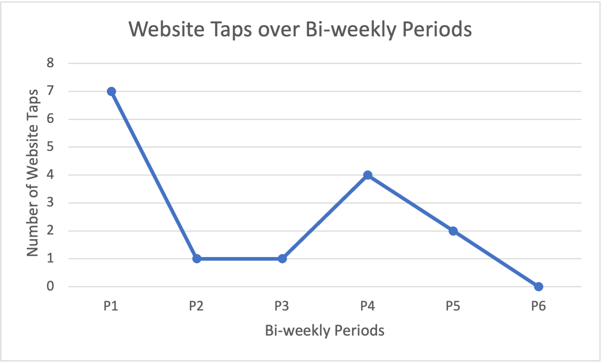
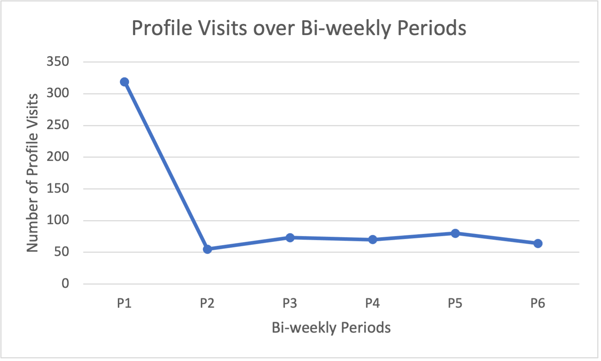
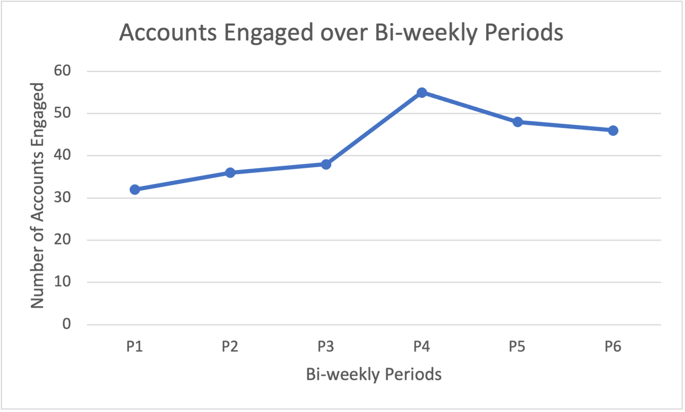
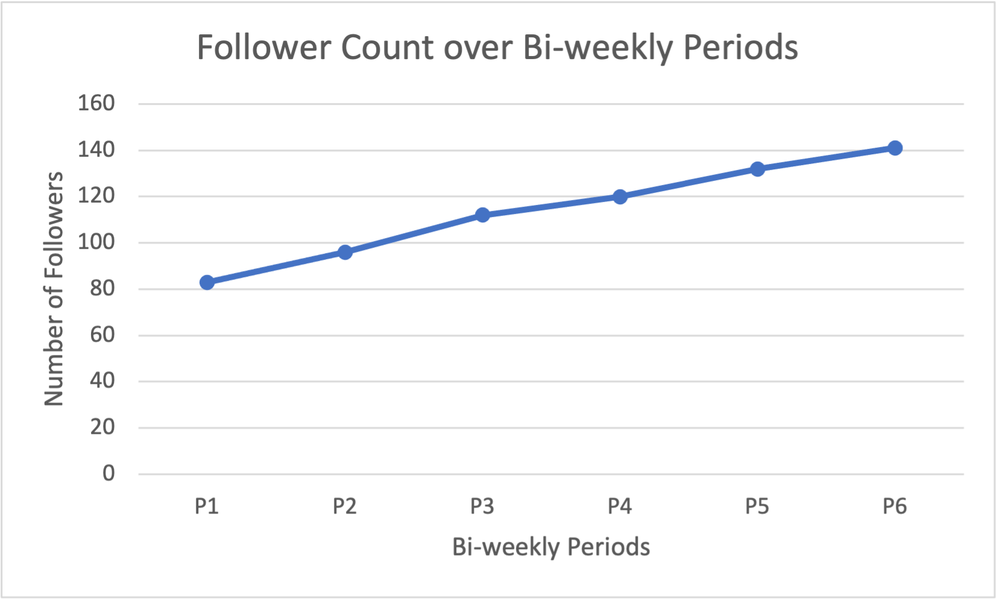
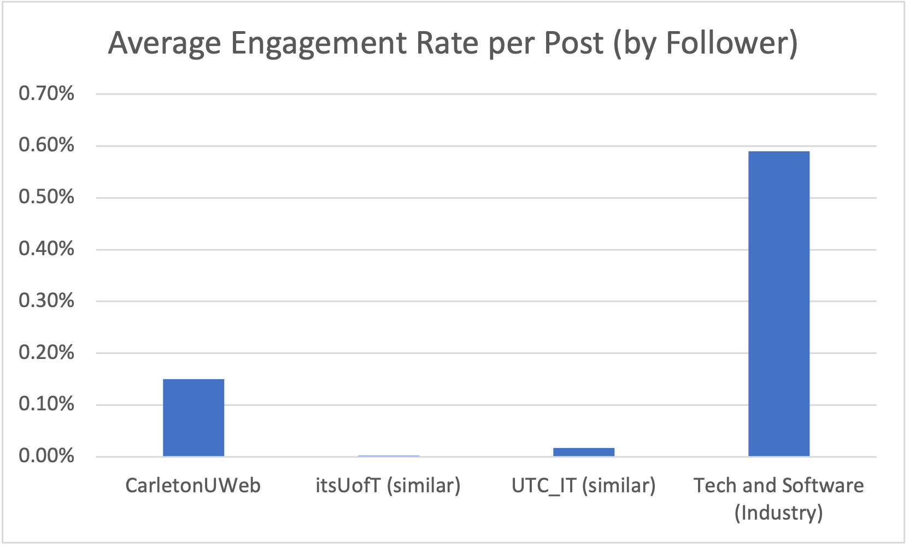

The aim of this three-month pilot project was to assess the effectiveness of Instagram as a community-building tool for Web Services and evaluate the long-term resource requirements for maintaining a presence on the platform. Deliverables for the project are as follows: strategic plan, Instagram account, monthly content calendars, social media content, retrospective minutes, bi-weekly metrics report, and a summary project report.
The primary target audience comprises Gen Z individuals aged 17-25 with an interest in digital marketing, residing in Ontario. They are seeking to learn the basics of web-based communication. The secondary target audience includes Millennials aged 26-34 working in web communications, residing in Canada, and looking to stay up-to-date with current web trends and developments.
Instagram was chosen as the platform for this pilot project due to its impressive reach and engagement metrics. With two billion monthly active users, Instagram is the fourth most popular social media platform in the world, and its user base is primarily comprised of individuals between the ages of 18-34, which aligns with our target audience. In addition, Instagram was the most downloaded app in 2021 and is ranked third among the platforms that marketers want to invest the most time and money in. Moreover, 91% of people use Instagram to follow an interest, and the platform's users spend an average of 30 minutes per day on the app, with 59% logging in daily. Finally, the median engagement on Instagram is 17 times higher than Facebook posts and 33 times higher than a tweet, making it an ideal platform for building an online community.
Twitter is Web Services’ primary social media platform; however, it is becoming a less regulated space. As such, there is a need to diversify our social media channels. The primary objective of this pilot project is to assess whether Instagram is a suitable platform for the organization. Specifically, the project aims to evaluate whether Instagram can enhance the authority and reputation of Web Services, as well as whether it can be used to build an engaged online community. By conducting a thorough analysis of Instagram's potential, we hope to determine whether the platform can be incorporated into our broader social media strategy.
To assess the suitability of Instagram as a social media platform for Web Services, this pilot project utilized various methods to collect and analyze data. Prior to the launch of the Instagram account, a competitive analysis was conducted to identify the strengths and weaknesses of similar accounts on Instagram. This involved analyzing the content, engagement rates, and follower counts of similar accounts. Through this analysis, we were able to set realistic expectations and goals for our social media strategy. Furthermore, these similar accounts allowed us to identify successful tactics, content ideas, and engagement strategies. As well, we were able to uncover gaps in their social media strategy and use these untapped opportunities to stand out.
To monitor the progress of the project, we biweekly tracked the following key performance indicators using Instagram's built-in analytics tool:
In addition to data collection, we conducted regular retrospective meetings to identify trends in engagement and user behavior, which allowed us to adjust our content strategy and posting schedule as necessary.
To facilitate content planning and organization, we created monthly content calendars, which helped ensure the consistency and relevance of our Instagram content. We used Canva to design the content for the accounts’ posts, and stories. As well, we used Adobe Illustrator, Adobe After Effects, and Capcut to create reels for the account.
These metrics reflect the visibility and potential exposure of our content, allowing us to assess the effectiveness of our social media efforts in reaching a broader audience. Neither graphs demonstrate an obvious positive or negative trend. We reach an average of 199 accounts, and we have an average of 734 impressions.
Monitoring website taps provides insights into the effectiveness of our social media strategy in generating interest and directing users to our website. We have an average of 3 website taps. The graph demonstrates a negative trend over time. However, this makes sense as not much of our content directs our audience to our website.
Tracking profile visits helps us assess if our content is attracting attention and piquing curiosity among users. The graph remains relatively constant over time. We have an average of 110 profile visits.
Tracking accounts engaged helps us determine if our content is resonating with our audience. The graph demonstrates a positive trend over time. The average growth percentage is calculated at 7.29% and we are reaching an average of 43 accounts per bi-weekly period. This demonstrates that our content is effective and resonating with the greater online community.
Tracking the number of followers helps us gauge the growth of our account. The graph demonstrates a positive trend over time. The average growth percentage is calculated to be 11.65%, indicating that our social media presence is successful. This shows that we are meeting our objective of building an online community, and that we are establishing our authority, as well as enhancing our reputation.
Benchmarks provide a standard against which we can evaluate the performance of our social media efforts. By comparing average engagement rate benchmarks, we can assess how well we are performing relative to our peers. At an average engagement rate of 0.15%, we are falling short of the Tech and Software industry average engagement rate (0.59%). However, we are performing significantly better than similar accounts, with UofT and UTC having an average engagement rate of 0.0024% and 0.02% respectively.
Image: Engaged AudienceBased on the Instagram Insights screenshots above, our efforts in reaching our target audience have been successful. The data reveals that our most engaged audience consists of individuals aged 18-24 residing in Ottawa
Following the conclusion of this three-month pilot project, we have determined that Instagram is a suitable social media platform for Web Services. Instagram has the potential to enhance the authority and reputation of Web Services. The platform allowed the organization to showcase its brand personality, values, and culture, which helped to increase engagement and build trust with the audience. By sharing relevant and valuable content, Web Services was able to attract and retain followers who were interested in the organization's offerings and expertise.
The recommendation is for Web Services to incorporate Instagram into its broader social media strategy and continue to invest in the platform to build a strong online presence and engage with its audience. The following recommendations can be made for future work: